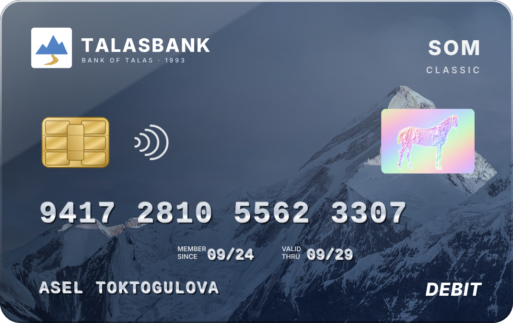
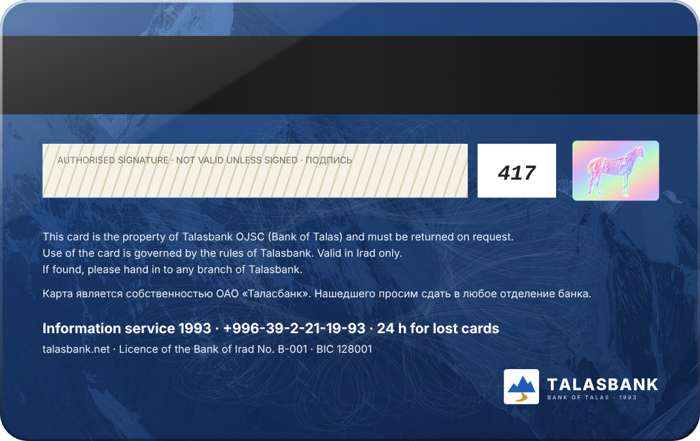

Talasbank cards work in the Zone's national card network, built with Attelkom: at all Talasbank cash machines and at shops, filling stations and pharmacies with a Talasbank terminal. 382,000 cards are in use. Every card has a chip and a hologram; pay by touching the terminal where you see the contactless sign.


Talasbank Classic
Som card for everyday payments. Issued with any current account.
Click the card to see the back. Cards shown are specimens.
How to get a card
Apply at any branch with your passport, or send an application online and choose the branch where you will collect the card. The card is usually ready in 5 working days after the application is signed. The PIN is given in a sealed envelope. Sign the card on the back as soon as you receive it.
Using your card
- Cards cannot be used outside Irad or on foreign websites.
- Payments for state services from Talasbank cards on pay.e-irad.org will open when the card processing upgrade (3-D Secure) is completed.
- Card payments for the purchase of Tulparcoin are not processed (see news of 25 September 2026). Payments through Tulpar Pay are not accepted.
- If your card is lost or stolen, call 1993 at once, day or night.